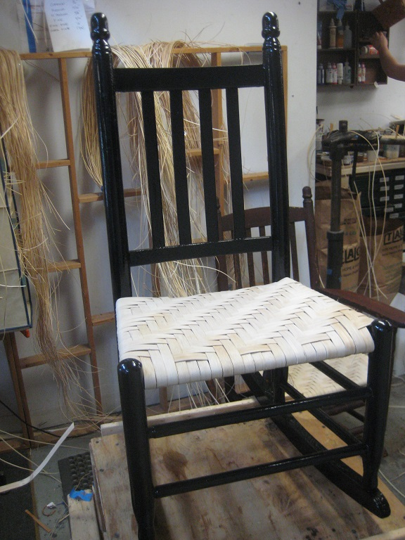
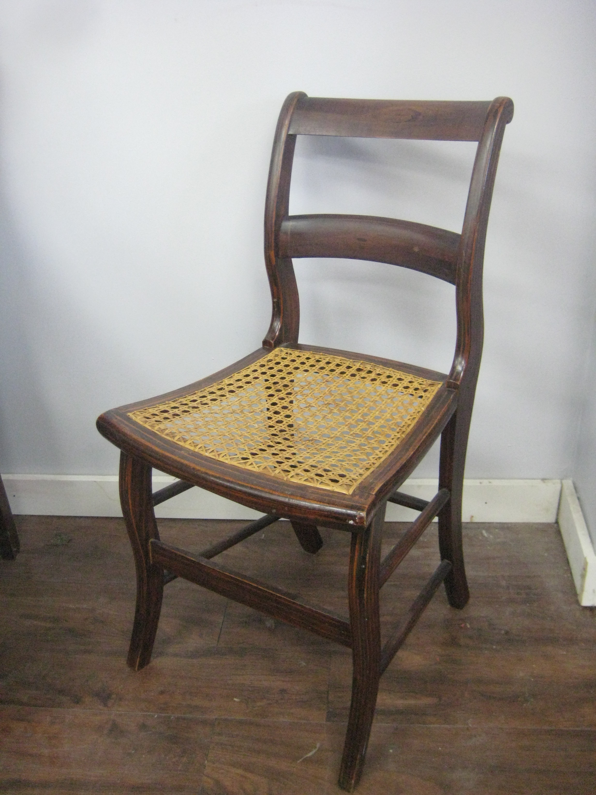

Seat Weaving
Basket makers have used other similar materials to weave their wares. The same materials were also used to build seats for chairs, benches, and even to hold up mattresses.
Other methods of weaving seemed to be popular on rocking chairs, like the green New England Porch Rocker pictured. Weavers used flat reeds, binding cane, etc. Rush was used to make very strong twine to be woven on chair frames. People in the Shaker communities made a canvas "tape." It is basically a 40 foot ribbon on colored cangas used to weave into seats.
At Recovered you can learn how to work with tehse specialize products to restore your chairs as well.

Caning
There is evidence that a form of caning and seat weaving with rush reeds was employed as far back as the Egyptian Empire. The current style of caning is just a few hundred years old. Downton Abbey fans can see it in the Lady Dowager's furniture.
There are 2 kinds of caning: hand cane and press cane. The hand caned seats are woven in a 7 step process using individual lengths or cane to achieve the tell-tale hexagon shaped holes.
Press cane is different in that an already made sheet of cane is stretched and "pressed" into a groove surrounding the hole in the middle of the seat frame. It is then wedged into place with a different piece of wood called a spline.
Whichever method you need to use to restore your chair, the Drop In Clinic can teach you how to do it. Bring your chair by sometime and we can talk about what you need.

Upholstery
Upholstered seats became popular in the homes of the artistocracy as far back as the 17th century. The ruling class during the Middle Ages also appear to have had upholstered seats.
It wasn't until the 1800's that having upholstered furniture was the norm in most housholds. Today, we cannot even imagine having to sit on wooden benches and chairs all the time.
The Drop In Clinic at Recovered is designed to teach you how to use specialized tools and traditional materials to upholster your own custom chair. Now that chair you bought at a yard sale can finally be completed.